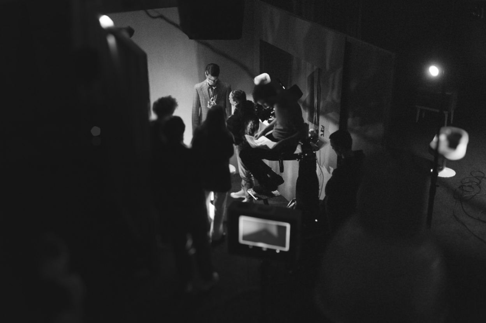

Een verklaring, geen keurmerk
De makers leggen zelf vast wat er is gebeurd. Origin Report controleert of certificeert niet, maar maakt een heldere en vergelijkbare verklaring mogelijk.
Origin Report maakt helder waar en in welke mate generatieve AI in een productie is gebruikt—van script tot campagne.
Twaalf onderdelen. Ongeveer drie minuten. Niets wordt geüpload.Lange documentaire · 2026
AI heeft het filmlandschap blijvend veranderd. Het is steeds moeilijker om te zien of beeld, geluid of tekst gedeeltelijk of volledig is gegenereerd. Origin Report geeft makers een eenvoudige manier om daar zelf duidelijk over te zijn.
De makers leggen zelf vast wat er is gebeurd. Origin Report controleert of certificeert niet, maar maakt een heldere en vergelijkbare verklaring mogelijk.
Twee bijgewerkte shots zijn iets anders dan een volledig gegenereerde film. Daarom wordt het productieproces opgesplitst in twaalf herkenbare onderdelen.
Zorgen over auteurschap, arbeid en herkomst zijn begrijpelijk. Juist daarom helpt concrete openheid beter dan een algemeen label.
Een film ontstaat door samenwerking tussen veel vakgebieden. Daarom kijkt het rapport verder dan alleen beeldgeneratie: van scenario en casting tot setgeluid, montage, muziek, mastering en campagne.

Niet ‘publiceer een principe’, maar: vul het één keer in en je hebt het antwoord klaar voor elk festivalformulier, elke omroep en elke opdrachtgever.
Voor elk onderdeel kies je: geen generatieve AI, AI-ondersteund of AI-gegenereerd. Waar nodig voeg je de gebruikte tools en een toelichting toe.
Een toekomstige versie kan verklaringen doorzoekbaar maken, zodat publiek, festivals en opdrachtgevers kunnen opzoeken hoe een film is gemaakt. De huidige versie begint bewust eenvoudig: de maker maakt en publiceert zelf het rapport.
Omdat transparantie alleen werkt als de drempel laag is. Makers moeten hun AI-gebruik kunnen toelichten zonder abonnement, account of afhankelijkheid van een leverancier. Het format en de basisverklaring blijven daarom vrij toegankelijk.
Het is niet verplicht en het is geen keurmerk. Een Origin Report laat wel zien dat je verantwoordelijkheid neemt voor je maakproces. Dat geeft publiek, medewerkers, financiers en opdrachtgevers een concreet en genuanceerd antwoord in plaats van een algemeen statement.
Je kunt de korte verklaring opnemen in de aftiteling of perskit, meesturen met festivalinschrijvingen en gebruiken bij vragen van omroepen, fondsen, distributeurs, klanten en andere opdrachtgevers. Het volledige bestand kan naast de productie worden bewaard of gepubliceerd.
JSON is een klein, open tekstformaat dat zowel door mensen als computers gelezen kan worden. Daardoor blijft het rapport overdraagbaar en kan dezelfde informatie later zonder opnieuw invoeren worden gebruikt in festivalformulieren, databases of een openbaar register.
IPTC is een internationale organisatie die standaarden beheert voor informatie bij nieuws- en mediabestanden. Origin Report verwijst waar passend naar hun bestaande termen voor de digitale herkomst van media, zodat de verklaring beter aansluit op andere systemen. Je hoeft IPTC niet te kennen om het formulier te gebruiken.
Ja. Origin Report is een verklaring, geen technische detectie of onafhankelijke controle. Wie bewust onjuist verklaart, ondermijnt daarmee vooral de eigen geloofwaardigheid en mogelijk ook afspraken met festivals of opdrachtgevers. Het systeem gaat uit van verantwoordelijkheid, ondertekening en transparantie.
Als blijkt dat makers en organisaties dit format daadwerkelijk gebruiken en er voldoende behoefte is aan zoeken en vergelijken. Eerst testen we of de verklaring in de praktijk duidelijk, bruikbaar en volledig genoeg is.